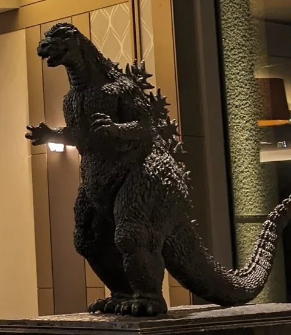
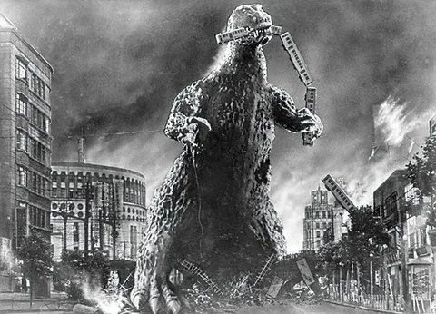
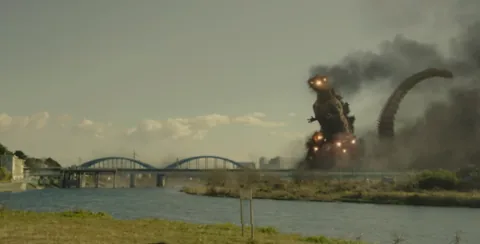
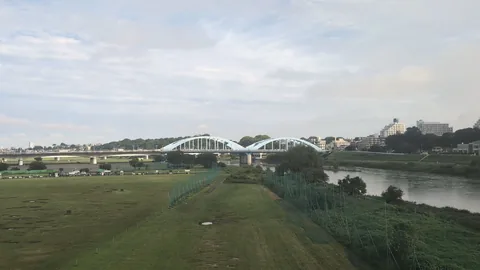

01 / GODZILLA · Tokyo et la rivière Tama
Le Tokyo de Godzilla : des rues à la fenêtre du train
Après avoir levé les yeux vers Godzilla en ville, retrouvez le pont de Shin Godzilla. Prolongez la balade depuis la fenêtre du train.
Comparer le pont Maruko à l’écran et depuis le train ↓
01 Shinjuku
Au-dessus des immeubles, levez les yeux
En avançant dans la rue à Kabukicho, vous apercevez le visage et les griffes de Godzilla au-dessus des immeubles couverts d’enseignes. C’est la tête de Godzilla, haute d’environ 12 mètres, au huitième étage du Shinjuku Toho Building.
Pour la photo, gardez aussi la rue et ses enseignes dans le cadre. Les passants et les immeubles donnent l’échelle du monstre tout en faisant sentir l’animation du quartier.
02 Hibiya
Cette fois, au pied de la statue
À Hibiya Godzilla Square, vous pouvez observer Godzilla des plaques dorsales jusqu’à la queue. La nuit, l’éclairage fait ressortir les reliefs de sa peau et de son dos : une autre impression que son visage aperçu tout là-haut à Shinjuku. Le cinéma voisin abrite lui aussi une statue de Godzilla.


Une escapade depuis la gare de Tokyo
Les stations les plus proches sont Hibiya, en métro, et JR Yurakucho. Vous pouvez prolonger la balade jusqu’à Ginza, également présent dans Godzilla Minus One.
Carte de Hibiya Godzilla Square ↗Cet air familier, jusque sur le quai
Tendez l’oreille sur le quai du métro. À la station Hibiya, sur les lignes Hibiya et Chiyoda, le thème de Godzilla sert de mélodie de départ.
Annonce de Tokyo Metro ↗03 Tokyo–Shinagawa
Entre les immeubles, la tour de Tokyo

Entre Tokyo et Shinagawa, cherchez, du côté des sièges E, la tour rouge et blanche entre les immeubles : elle reçoit un rayon thermique dans Godzilla: Tokyo SOS. À mesure que le train avance, elle disparaît de nouveau derrière les bâtiments.
Repérer la tour de Tokyo depuis le train →Une balade à Shinagawa
Marchez jusqu’au lieu du premier débarquement
Dans le premier Godzilla (1954), le monstre apparaît pour la première fois sur l’île principale près de l’extrémité est du pont Yatsuyama, à Shinagawa. Sur la photographie du film, le train qu’il tient dans sa gueule souligne sa taille immense. C’est le Tokyo d’avant le Shinkansen Tokaido et la tour de Tokyo.
Le pont actuel est le quatrième, reconstruit en 1985. Le Shinkansen entre dans un tunnel après Shinagawa. Pour rejoindre le pont, comptezenviron 9 minutes à pied depuis la gare JR de Shinagawa, ou environ 4 minutes depuis la gare Keikyu de Kita-Shinagawa.

04 Rivière Tama
Sur la rivière Tama, ces arches bleues familières
Dans Shin Godzilla (2016), les Forces d’autodéfense affrontent Godzilla sur la rivière Tama. Les arches devant le monstre sont celles du pont Maruko. Depuis le Shinkansen, vous pouvez voir ce même pont sous un autre angle.
Le pont Maruko dans le film

Le pont Maruko depuis le train

Shinagawa–Shin-Yokohama Côté des sièges E
En traversant la rivière Tama, cherchez la succession d’arches au-dessus de l’eau.
Avant ou après le voyageFilm et exposition en novembre 2026
Le film Godzilla -0.0
Sortie au Japon le 3 novembre 2026.
Godzilla Expo : le monde de Minus
Du 6 au 17 novembre 2026, au 11e étage de Daimaru Tokyo. Certains créneaux nécessitent un billet horodaté. Les valises et autres bagages volumineux sont interdits.
Informations officielles sur l’exposition ↗
TM & © TOHO
Sources et crédits photo
- Informations pratiques du Shinjuku Toho Building
- Tokyo Metro : mélodies de départ à la station Hibiya
- TOHO : la scène de Ginza dans Godzilla Minus One
- Tokyo Location Box : la tour de Tokyo au cinéma
- Shinagawa Film Commission : le lieu de débarquement du premier Godzilla
- Association touristique de Shinagawa : le pont Yatsuyama
- Arrondissement d’Ota : lieux de cinéma à Denenchofu (PDF)
Les photographes et les sources des extraits de films sont indiqués sous chaque image. Cet article de voyage est non officiel.